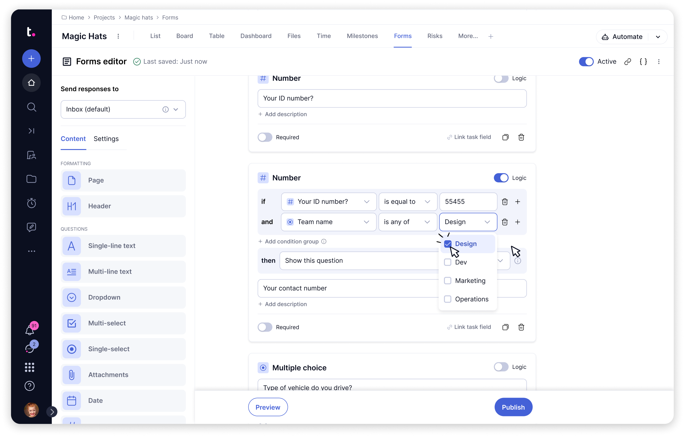
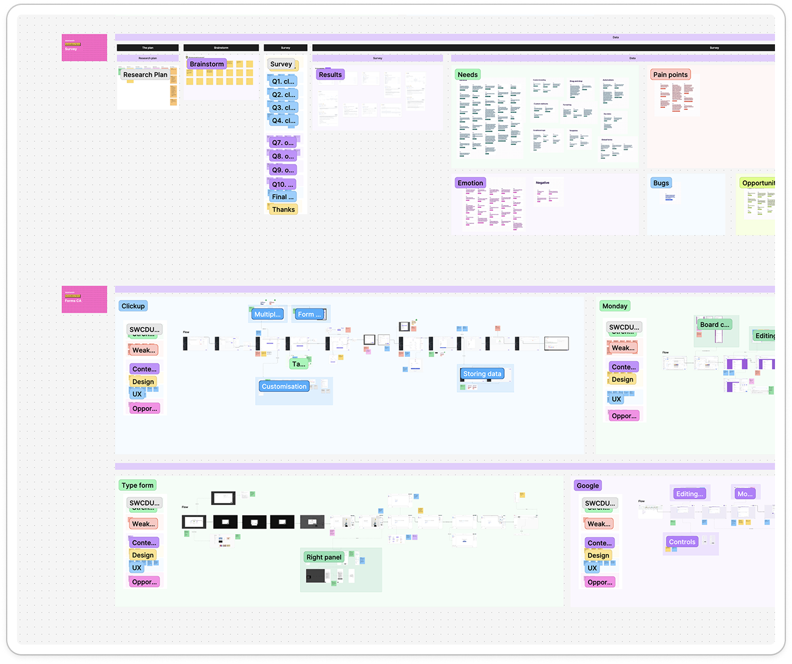
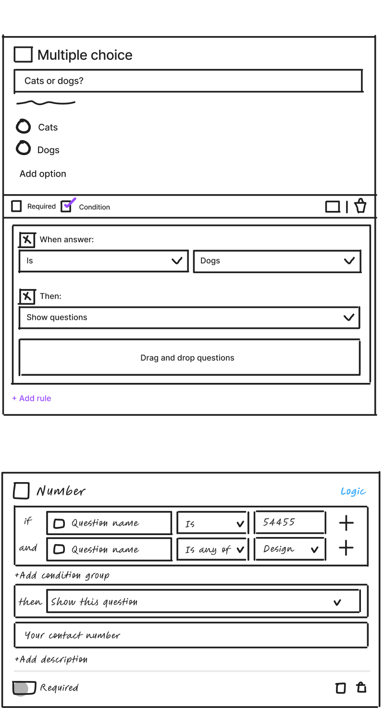
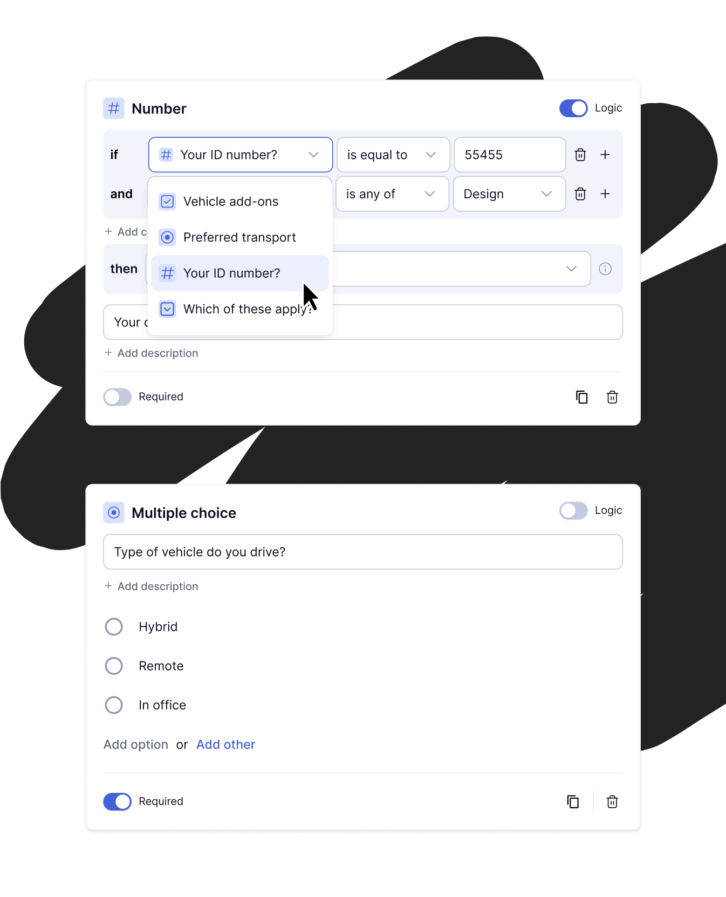

Forms — Conditional logic
Reducing form complexity to improve data accuracy

Quick read
Project overview
Teamwork Forms had no way to adapt based on user input. To capture all possible scenarios, form creators had to include every question upfront — resulting in extremely long forms where respondents were forced to answer irrelevant questions, and teams received submissions filled with empty or unnecessary data that required manual cleanup.
With conditional logic, users could show or hide questions based on responses. Forms became shorter, easier to complete, and far more accurate. Only relevant questions were presented to respondents, and only meaningful data flowed through to tasks — reducing friction, eliminating redundant inputs, and improving confidence in submitted data.
Responsibilities
Discovery, research, strategy, design
Target users
Project managers and team leads building and managing complex workflows
Adoption
40% increased adoption rate of Forms within 2 months of launching conditional logic
Revenue unlocked
$147,581 in revenue unblocked by dynamic forms powered by conditional logic
Problem statement
Users were forced through irrelevant questions, leading to inaccurate data and manual cleanup.
Forms were increasingly used to support complex workflows, but the system couldn't adapt questions based on user responses. To cover every possible scenario, form creators were forced to include all questions upfront, resulting in long, static forms.
The issue continued after submission. All questions — relevant or not — were returned as part of the task data, leaving teams to manually review and remove unnecessary fields. This extra effort slowed workflows, reduced trust in submissions, and ultimately led to unreliable data.
Current known pains
- Forms could not adapt to user input
- Respondents were forced to complete irrelevant questions
- Submitted data included empty or unnecessary fields
- Teams manually cleaned data after every submission
- Trust in form outputs decreased as complexity increased
- Users abandoned the tool in favour of alternative solutions

Discovery & research
Validating the right problem.
Building the right thing.
To understand whether this was a real and widespread problem, we focused on how users were actually building and using Forms. We gathered feedback directly within the Forms experience, reviewed recurring support requests, and spoke with users creating complex, multi-step forms.
A consistent pattern emerged: users were designing forms defensively — adding every question upfront because they had no way to control what was shown based on responses. Conditional behaviour came up repeatedly as a top unmet need.
Discovery areas
- Direct and indirect competitors
- Dedicated form tools
- Research and survey platforms


Test and validate
Concept testing.
Rather than assuming which direction was right, I designed a concept test to validate both approaches. I designed two distinct concepts representing different trade-offs and asked participants to enable logic, create rules and complete realistic setup tasks using each.
While users found the rule-based approach more complex initially, they consistently preferred it due to the level of control it offered. The simpler model was easier to grasp, but its limitations became apparent early — particularly for more complex Forms.
Concept directions tested
- Nested logic — easier to learn and quicker to configure, but limited in scalability
- Rule-based logic — more powerful and flexible, but introduced a higher learning curve
Learnings
- Flexibility outweighed initial simplicity
- Complexity was acceptable when it reduced downstream effort
- Users preferred complexity in setup, not during form completion
Solution
Design & Build
The final solution introduced Conditional Logic as a first-class capability within Forms, allowing questions and sections to dynamically appear based on user responses. Instead of presenting every possible question upfront, Forms could now adapt in real time — showing only what was relevant at each stage.
The system was designed around a rule-based logic model, reflecting the learning outcomes of concept testing. While this approach introduced more complexity during setup, it provided the flexibility needed to support both simple and highly complex workflows without forcing users into workarounds later.
Logic was designed to work consistently across all supported question and section types, ensuring predictable behaviour regardless of form complexity. Rules were evaluated in real time, allowing Forms to update instantly as respondents selected answers — without disrupting the completion flow.
Advanced capabilities such as AND / OR conditions were introduced iteratively, allowing the system to grow in power without overwhelming users upfront.

Clear mental models
Familiar IF / THEN logic kept the interface learnable without sacrificing power

Progressive disclosure
Advanced options only revealed when needed — keeping simple forms simple

Separation of concerns
Complexity kept in form setup, simplicity preserved in form completion

Metrics
Unlocking new revenue and increased adoption of Forms
Beyond improving the form experience, Conditional Logic delivered measurable commercial impact. It removed a key revenue blocker, drove plan adoption, and strengthened the platform's ability to support more complex workflows.

40%
Increased Forms adoption
Adoption rate of Forms increased within 2 months of launching conditional logic

$147,581
Revenue unlocked
Dynamic forms powered by conditional logic removed key revenue blockers

Improved data
Better data capture
Only relevant responses captured at submission — building trust in form outputs
Outcomes
Learnings and reflection
Conditional Logic had a clear and immediate impact on how Forms were designed and used. Respondents were no longer forced through irrelevant questions — resulting in shorter, more focused completion experiences.
For form creators and teams, the quality of submitted data improved significantly. Only relevant responses were captured and passed through to tasks, reducing the need for manual review and cleanup.
What changed
- Forms adapted in real time — respondents only saw what was relevant to them
- Submitted data was cleaner and required significantly less manual cleanup
- Trust in form submissions increased across teams using the feature
- Conditional Logic expanded with more advanced capabilities over time and remains a core part of Forms today
What I learned
- Testing two competing concepts upfront saved significant rework later
- Users will accept complexity in setup if it removes complexity elsewhere in their workflow
- Progressive disclosure is only effective when the simple path is genuinely simple
- Commercial impact is easier to demonstrate when success metrics are defined before design begins
Defining the problem clearly before moving to solutions made the direction easier to defend and faster to ship. If revisiting this work, I would explore smarter defaults for common logic patterns — reducing setup time further for users building straightforward conditional flows.